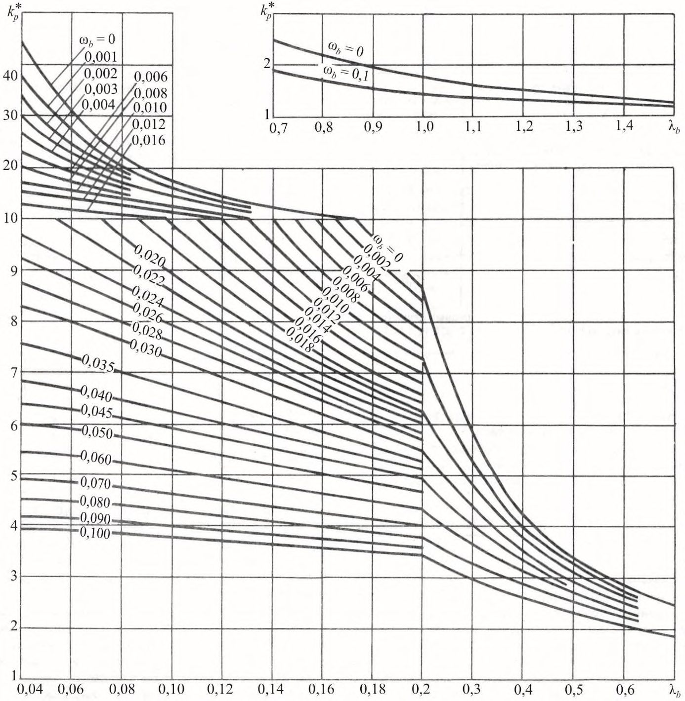
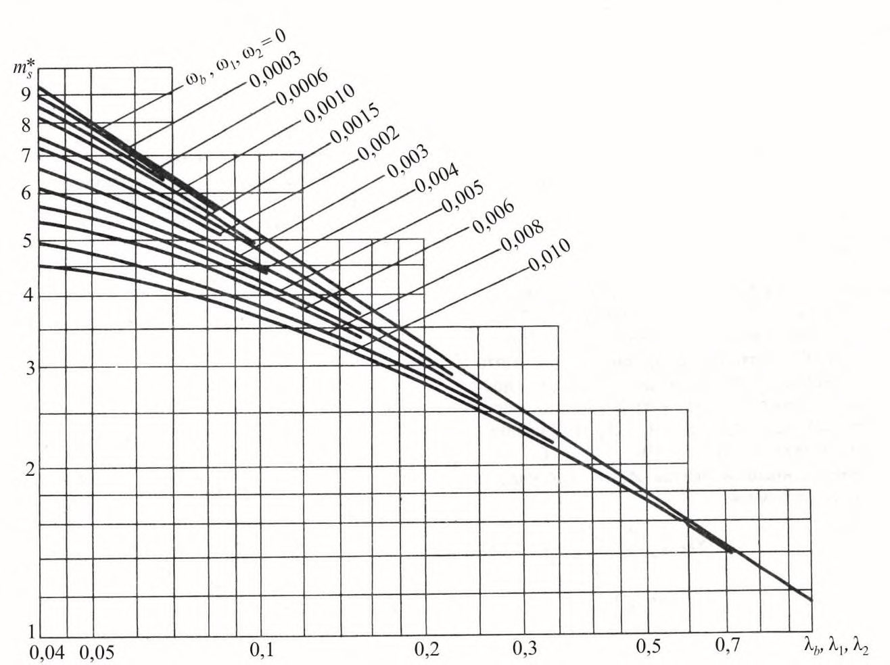
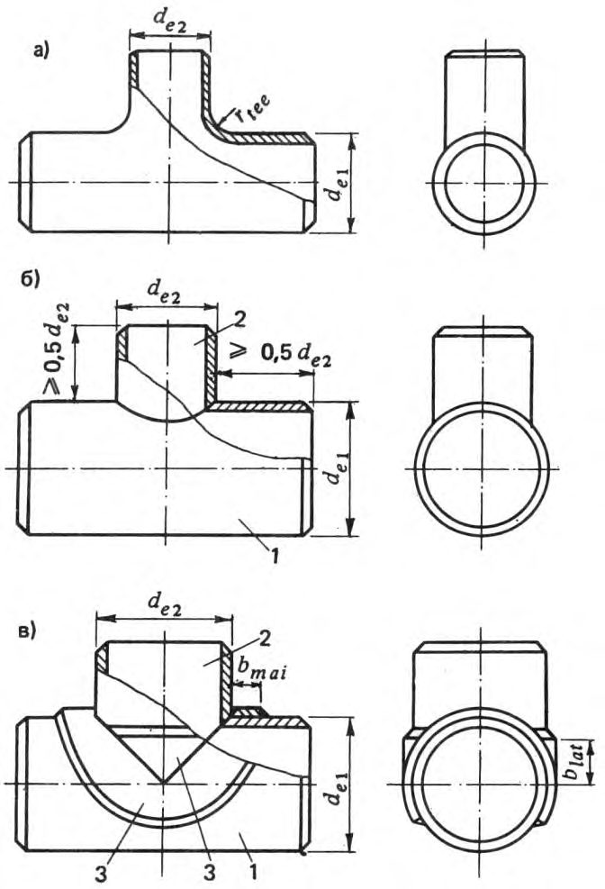
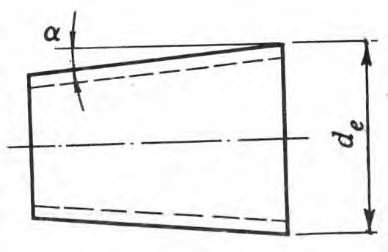
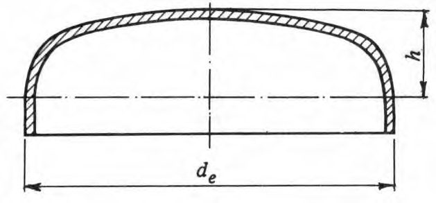
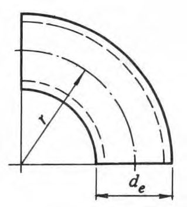

СП 33.13330.2012 «Расчет на прочность стальных трубопроводов»
О документе: разработчики, утверждение, регистрация, ключевые слова
Цели и принципы стандартизации в Российской Федерации установлены Федеральным законом от 27 декабря 2002 г. № 184-ФЗ «О техническом регулировании», а правила разработки постановлением Правительства Российской Федерации от 19 ноября 2008 г. № 858 «О порядке разработки и утверждения сводов правил».
- 1 ИСПОЛНИТЕЛЬ - Инжиниринговая нефтегазовая компания - Всероссийский научноисследовательский институт по строительству и эксплуатации трубопроводов, объектов ТЭК (ОАО ВНИИСТ)
2 ВНЕСЕН Техническим комитетом по стандартизации ТК 465 «Строительство»
- 3 ПОДГОТОВЛЕН к утверждению Департаментом архитектуры, строительства и градостроительной политики
- 4 УТВЕРЖДЕН приказом Министерства регионального развития Российской Федерации (Минрегион России) от 29 декабря 2011 г. № 621 и введен в действие с 01 января 2013 г.
- 5 ЗАРЕГИСТРИРОВАН Федеральным агентством по техническому регулированию и метрологии (Росстандарт). Пересмотр СП 33.13330.2010 «СНиП 2.04.12-86 Расчет на прочность стальных трубопроводов»
Информация об изменениях к настоящему своду правил публикуется в ежегодно издаваемом информационном указателе «Национальные стандарты», а текст изменений и поправок - в ежемесячно издаваемых информационных указателях «Национальные стандарты». В случае пересмотра (замены) или отмены настоящего свода правил соответствующее уведомление будет опубликовано в ежемесячно издаваемом информационном указателе «Национальные стандарты». Соответствующая информация, уведомление и тексты размещаются также в информационной системе общего пользования - на официальном сайте разработчика (Минрегион России) в сети Интернет
© Минрегион России, 2011
Настоящий нормативный документ не может быть полностью или частично воспроизведен, тиражирован и распространен в качестве официального издания на территории Российской Федерации без разрешения Минрегиона России
Дата введения 2013-01-01
Введение
Настоящий свод правил составлен с учетом требований федеральных законов от 27 декабря 2002 г. № 184-ФЗ «О техническом регулировании», от 30 декабря 2009 г. № 384-ФЗ «Технический регламент о безопасности зданий и сооружений».
Актуализация выполнена авторским коллективом ОАО ВНИИСТ - канд. техн. наук В.В. Рождественский -руководитель темы, инж. В.П. Ханкин .
1Область применения
Настоящий свод правил распространяется на стальные трубопроводы (в дальнейшем - трубопроводы) различного назначения номинальным диаметром до 1400 включ., предназначенные для транспортирования жидких и газообразных сред давлением до 10 МПа и температурой от минус 70 С до плюс 450 С включ., и устанавливает требования к расчету их на прочность и устойчивость.
Настоящий свод правил не распространяется на магистральные и промысловые газои нефтепроводы, технологические и шахтные трубопроводы, на трубопроводы, работающие под вакуумом и испытывающие динамические воздействия транспортируемой среды, трубопроводы особого назначения (атомных установок, передвижных агрегатов, гидро- и пневмотранспорта и др.), а также на трубопроводы, регламентированные в [1].
2Нормативные ссылки
В настоящем своде правил приведены ссылки на следующие нормативные документы:
ГОСТ Р 52720-2007 Арматура трубопроводная. Термины и определения
ГОСТ 12.1.007-76 ССБТ. Вредные вещества. Классификация и общие требования безопасности
СП 14.13330.2011 «СНиП II-7-81* Строительство в сейсмических районах»
СП 16.13330.2011 «СНиП II-23-81* Стальные конструкции»
СП 20.13330.2011 «СНиП 2.01.07-85* Нагрузки и воздействия»
СП 24.13330.2011 «СНиП 2.02.03-85 Свайные фундаменты»
СП 35.13330.2011 «СНиП 2.05.03-84* Мосты и трубы»
Примечание - При пользовании настоящим сводом правил целесообразно проверить действие ссылочных стандартов и классификаторов в информационной системе общего пользования - на официальном сайте национального органа Российской Федерации по стандартизации в сети Интернет или по ежегодно издаваемому информационному указателю «Национальные стандарты», который опубликован по состоянию на 1 января текущего года, и по соответствующим ежемесячно издаваемым информационным указателям, опубликованным в текущем году. Если ссылочный документ заменен (изменен), то при пользовании настоящим сводом правил следует руководствоваться замененным (измененным) документом. Если ссылочный материал отменен без замены, то положение, в котором дана ссылка на него, применяется в части, не затрагивающей эту ссылку.
3Термины и определения
В настоящем своде правил применены следующие термины с соответствующими определениями:
- 3.1анкер
- Устройство, обеспечивающее стабильность проектного положения трубопровода на обводненных участках трассы; СП 33.13330.2012
- 3.2балластировка трубопровода
- Установка на трубопроводе устройств, обеспечивающих его проектное положение на обводненных участках трассы;
- 3.3минимальная толщина стенки
- Номинальная минус допуск на толщину стенки трубы;
- 3.4номинальная толщина стенки трубы
- Толщина стенки трубы, полученная из расчета на прочность под внутренним давлением и округленная до ближайшего большего значения, предусмотренного государственными стандартами или техническими условиями;
- 3.5номинальный диаметр
- Приблизительно равен внутреннему диаметру трубопровода, выраженному в миллиметрах и соответствующий ближайшему значению из ряда чисел, принятых в установленном порядке (не имеет единицы измерения), ГОСТ Р 52720;
- 3.6рабочее давление
- Наибольшее избыточное давление в данной точке трубопровода на всех предусмотренных проектом стационарных режимах работы трубопровода;
- 3.7расчетная толщина стенки трубопровода
- Толщина стенки, определяемая из расчета по заданным значениям расчетного давления, наружного диаметра трубы и расчетного сопротивления материала;
- 3.8соединительные детали
- Элементы трубопровода, предназначенные для изменения направления его оси, ответвления от него, изменения его диаметра, толщины стенки и герметизации (отвод, тройник, переход, переходное кольцо, днище (заглушка));
- 3.9упругий изгиб
- Изменение направления оси трубопровода (в вертикальной или горизонтальной плоскостях) без использования отводов.
4Обозначения и сокращения
В настоящем своде правил приняты следующие обозначения и сокращения: bmai , blat ширина накладок соответственно магистральной части и ответвления тройникового соединения; DN номинальный диаметр; de наружный диаметр труб и соединительных деталей; de 1, de 2 наружный диаметр соответственно магистральной части и ответвления тройникового соединения; d вн -внутренний диаметр труб; h высота эллиптической части заглушки; kp коэффициент повышения гибкости гнутых отводов; m l , n l - расчетные изгибающий момент и усилие на единицу длины продольного сечения трубопровода; ms коэффициент интенсификации напряжений; pn рабочее (нормативное) давление транспортируемой среды; q вет -нормативная ветровая нагрузка на единицу длины надземного трубопровода; q лед -нормативная гололедная нагрузка; q сн -нормативная снеговая нагрузка; q ср -нормативная нагрузка от веса транспортируемой среды;
Ru, Ry - расчетные сопротивления материала труб и соединительных деталей соответственно по временному сопротивлению и пределу текучести;
- Run , Ryn - нормативные сопротивления материала труб и соединительных деталей соответственно по временному сопротивлению и пределу текучести;
- r - радиус кривизны отвода;
- rtee - радиус закругления тройника;
- t - расчетная толщина стенки труб и соединительных деталей;
- t nom - номинальная толщина стенки трубы соединительных деталей;
- t i - толщина изоляционного (теплоизоляционного) покрытия трубопровода;
- c - коэффициент условий работы трубопровода;
- f - коэффициент надежности по нагрузке;
- mu - коэффициент надежности по временному сопротивлению материала труб и соединительных деталей при нормальной температуре (20 °С);
- my - коэффициент надежности по пределу текучести материала труб и соединительных деталей при нормальной температуре (20 °С);
- n - коэффициент надежности по ответственности трубопровода;
- tu - поправочный коэффициент надежности по материалу труб и соединительных деталей при расчетной температуре эксплуатации в расчетах по временному сопротивлению;
- ty - поправочный коэффициент надежности по материалу труб и соединительных деталей при расчетной температуре эксплуатации в расчетах по пределу текучести;
- u - коэффициент надежности для труб и соединительных деталей в расчетах по временному сопротивлению;
- ср - объемный вес транспортируемой среды;
- - коэффициент несущей способности труб и соединительных деталей;
- 1, 2, b - геометрический параметр соответственно магистральной части, ответвления тройникового соединения и отвода;
- σпр -
- максимальное продольное напряжение от расчетных нагрузок и воздействий;
- н пр σ - максимальное (фибровое) суммарное продольное напряжение;
- σпр N - продольное осевое напряжение от расчетных нагрузок и воздействий;
- 1, 2, b - параметр внутреннего давления соответственно магистральной части, ответвления тройникового соединения и отвода.
- ГВВ - горизонт высоких вод
5Общие положения
6Нагрузки и воздействия
Расчетные нагрузки, воздействия и их возможные сочетания необходимо принимать в соответствии с требованиями СП 20.13330.
Таблица 1
| Нагрузки и воздействия | Нагрузки и воздействия | Способ прокладки трубопровода | Способ прокладки трубопровода | Коэффициент надежности |
|---|---|---|---|---|
| Вид | Характеристика | подземный | надземный | по нагрузке f |
| Постоянные | Собственный вес трубопровода, арматуры и обустройств | + | + | 1,1 (0,95) |
| Вес изоляции | + | + | 1,2 | |
| Вес и давление грунта (засыпки, насыпи) | + | - | 1,2 (0,8) | |
| Предварительное напряжение трубопровода (упругий изгиб по заданному профилю, предварительная растяжка компенсаторов и др.) давление | + | + | 1,0(0,9) | |
| Гидростатическое воды | + | - | 1,0 | |
| Временные длительные | Внутреннее давление транспортируемой среды: | |||
| газообразной | + | + | 1,1 | |
| жидкой | + | + | 1,15 | |
| Вес транспортируемой среды: газообразной | + | + | 1,1 (1,0) | |
| жидкой | + | + | 1,0 (0,95) | |
| Температурный перепад металла стенок трубопровода | + | + | 1,1 | |
| Неравномерные деформации грунта, не сопровождающиеся изменением его структуры (осадки, пучения и др.) | + | + | 1,5 |
Окончание таблицы 1
| Нагрузки и воздействия | Нагрузки и воздействия | Способ прокладки трубопровода | Способ прокладки трубопровода | Коэффициент надежности |
|---|---|---|---|---|
| Вид | Характеристика | подземный | надземный | по нагрузке f |
| Кратко- временные | Снеговая Гололедная Ветровая Транспортирование отдельных секций, сооружение трубопровода, испытание и пропуск очистных устройств | - - - + | + + + + | 1,4 1,3 1,2 1,0 |
| Особые | Сейсмические воздействия Нарушение технологического процесса, временные неисправности или поломка оборудования | + + | + + | 1,0 1,0 |
| Неравномерные деформации грунта, сопровождающиеся изменением его структуры (селевые потоки и оползни; деформации земной поверхности в районах горных выработок и карстовых районах; деформации просадочных грунтов при замачивании или вечномерзлых при оттаивании и др.) | + | + | 1,0 |
где Sq вес снегового покрова на 1 м² горизонтальной поверхности земли следует принимать по СП 20.13330.
где i' - нормативное значение поверхностной гололедной нагрузки, определяемое по СП 20.13330.
где статическую wstc и динамическую wdyn составляющие ветровой нагрузки следует определять по СП 20.13330, при этом значение wdyn необходимо определять как для сооружения с равномерно распределенной массой и постоянной жесткостью.
7Расчетные характеристики материалов труб и соединительных деталей
Таблица 2
| Характеристика труб и соединительных деталей | Коэффициент надежности по материалу mu |
|---|---|
| Сварные из малоперлитной и бейнитной стали контролируемой прокатки и термически упрочненные трубы, изготовленные двусторонней электродуговой сваркой под флюсом по сплошному технологическому шву, с минусовым допуском по толщине стенки не более5%ипрошедшие100 %-ный контроль на сплошность основного | 1,34 |
| металла и сварных соединений неразрушающими методами Сварные из нормализованной, термически упрочненной стали и стали контролируемой прокатки, изготовленные двусторонней электродуговой сваркой под флюсомпосплошномутехнологическому шву и прошедшие 100 %-ный контроль сварных соединений | 1,40 |
| неразрушающими методами Сварные из нормализованной и горячекатаной низколегированной или углеродистой стали, изготовленные двусторонней электродуговой сваркой и прошедшие 100 %-ный контроль сварных соединений неразрушающими методами; бесшовные холодно- и теплодеформированные | 1,47 |
| Сварные из горячекатаной низколегированной или углеродистой стали, изготовленные двусторонней электродуговой сваркой или токами высокой частоты; штампованные и штампосварные соединительные детали; остальные бесшовные трубы и соединительные детали | 1,55 |
Примечание - Допускается применять коэффициенты 1,34 вместо 1,40, 1,40 вместо 1,47 и 1,47 вместо 1,55 для труб, изготовленных двусторонней сваркой под флюсом или электросваркой токами высокой частоты, со стенкой толщиной не более 12 мм при использовании специальной технологии производства, позволяющей получать качество труб, соответствующее данному коэффициенту mu .
| Характеристика труб и соединительных деталей | Коэффициент надежности по материалу my |
|---|---|
| Бесшовные из малоуглеродистых сталей | 1,10 |
| Сварные из стали с отношением 0,8 / un yn R R | 1,15 |
| Сварные из стали с отношением 0,8 / un yn R R | 1,20 |
Таблица 4
| Трубы и соединительные сталей | Поправочные коэффициенты надежности по материалу по временному сопротивлению tu и по пределу текучести ty при температуре эксплуатации трубопровода, С | Поправочные коэффициенты надежности по материалу по временному сопротивлению tu и по пределу текучести ty при температуре эксплуатации трубопровода, С | Поправочные коэффициенты надежности по материалу по временному сопротивлению tu и по пределу текучести ty при температуре эксплуатации трубопровода, С | Поправочные коэффициенты надежности по материалу по временному сопротивлению tu и по пределу текучести ty при температуре эксплуатации трубопровода, С | Поправочные коэффициенты надежности по материалу по временному сопротивлению tu и по пределу текучести ty при температуре эксплуатации трубопровода, С | Поправочные коэффициенты надежности по материалу по временному сопротивлению tu и по пределу текучести ty при температуре эксплуатации трубопровода, С | Поправочные коэффициенты надежности по материалу по временному сопротивлению tu и по пределу текучести ty при температуре эксплуатации трубопровода, С |
|---|---|---|---|---|---|---|---|
| детали из | минус 70 | минус 40 - плюс 20 | 100 | 200 | 300 | 400 | 450 |
| Углеродистых: | |||||||
| tu | - | 1,0 | 1,0 | 1,0 | 1,0 | - | - |
| ty | - | 1,0 | 1,05 | 1,15 | 1,40 | - | - |
| Низколегированных: | |||||||
| tu | 1,0 | 1,0 | 1,05 | 1,05 | 1,10 | 1,40 | 1,90 |
| ty | 1,0 | 1,0 | 1,10 | 1,15 | 1,25 | 1,60 | 2,20 |
| Легированных: | |||||||
| tu | 1,0 | 1,0 | 1,05 | 1,15 | 1,25 | 1,35 | 1,45 |
| ty | 1,0 | 1,0 | 1,05 | 1,15 | 1,25 | 1,35 | 1,45 |
Примечания
- 1 Для промежуточных значений расчетных температур величины tu и ty следует определять линейной интерполяцией двух ближайших значений, приведенных в таблице 4.
- 2 Знак «-» означает, что при таких температурах эксплуатации трубопровода углеродистые стали не применяются.
Таблица 5
| Транспортируемая среда и номинальный диаметр трубопровода ( D N ) | Коэффициент надежности по ответственности n трубопровода при нормативном давлении транспортируемой среды, МПа | Коэффициент надежности по ответственности n трубопровода при нормативном давлении транспортируемой среды, МПа | Коэффициент надежности по ответственности n трубопровода при нормативном давлении транспортируемой среды, МПа |
|---|---|---|---|
| 0 < р n ≤ 2,5 | 2,5 < р n ≤ 6,3 | 6,3 < р n ≤ 10 | |
| Горючие газы, D N DN 500; трудногорючие и негорючие (инертные) газы, D N DN 1000; легковоспламеняющиеся и горючие жидкости, D N DN 1000; трудногорючие и негорючие | 1,0 | 1,0 | 1,0 |
| Горючие газы, DN 500 D N DN 1000; трудногорючие и негорючие (инертные) газы, D N = DN 1200; легковоспламеняющиеся и горючие жидкости, D N = DN 1200; трудно-горючие и | 1,0 | 1,0 | 1,05 |
| негорючие жидкости, D N = DN 1400 Горючие газы, D N = DN 1200; трудногорючие и негорючие (инертные) газы, D N = DN 1400; легковоспламеняющиеся и горючие жидкости, D N = DN 1400 | 1,0 | 1,05 | 1,10 |
| Горючие газы, D N = DN 1400 | 1,05 | 1,10 | 1,15 |
Таблица 6
| Характеристика транспортируемой среды | Коэффициент условий работы трубопровода с |
|---|---|
| Вредные (классов опасности 1 и 2), горючие газы, в том числе сжиженные | 0,55 |
| Легковоспламеняющиеся и горючие жидкости; вредные (класса опасности 3) и трудногорючие и негорючие (инертные) газы | 0,70 |
| Трудногорючие и негорючие жидкости | 0,85 |
Примечание - Класс опасности вредных веществ следует определять по ГОСТ 12.1.007.
При отсутствии этого контроля расчетные сопротивления сварных швов, соединяющих между собой трубы и соединительные детали, следует принимать с понижающим коэффициентом 0,85.
8Определение толщин стенок труб и соединительных деталей
где y u R R R ; min = .
Толщина стенки труб и соединительных деталей, определенная по формуле (7), должна приниматься не менее 1/100 dе , но не менее 3 мм для труб и соединительных деталей номинальным диаметром DN 200 и менее, и не менее 4 мм - номинальным диаметром свыше DN 200.
Увеличение толщины стенки трубопроводов (соединительных деталей) с целью защиты их от коррозии, а также трубопроводов, находящихся в особых условиях строительства или эксплуатации (например, при прокладке трубопроводов в сейсмических районах или особенностях технологии сварки, производства строительномонтажных работ или значительных температурных перепадах в трубопроводе и др.), допускается только при условии, если это увеличение предусмотрено соответствующими нормативными документами, утвержденными или согласованными в установленном порядке.
где ξ = de 2 / de 1 - для тройниковых соединений; ξ = r / de - для отводов.
Значения коэффициентов а и b в формуле (8) следует принимать: для тройниковых соединений - по таблице 7; для отводов - по таблице 8.
Таблица 7
| Тройниковые соединения [см. формулу (8)] | Тройниковые соединения [см. формулу (8)] | Тройниковые соединения [см. формулу (8)] | Тройниковые соединения [см. формулу (8)] | Тройниковые соединения [см. формулу (8)] | Тройниковые соединения [см. формулу (8)] | |
|---|---|---|---|---|---|---|
| ξ = d e 2 / d e 1 | сварные без усиливающих элементов | сварные без усиливающих элементов | сварные, усиленные накладками | сварные, усиленные накладками | бесшовные и штампосварные | бесшовные и штампосварные |
| а | b | а | b | a | b | |
| От 0,00 до 0,15 вкл. | 0,00 | 1,00 | 0,00 | 1,00 | 0,22 | 1,00 |
| Св. 0,15 » 0,50 » | 1,60 | 0,76 | 0,00 | 1,00 | 0,62 | 0,94 |
| » 0,50 » 1,00 » | 0,10 | 1,51 | 0,46 | 0,77 | 0,40 | 1,05 |
Значения nl и ml (расчетное усилие и изгибающий момент в продольном сечении трубы единичной длины) необходимо определять с учетом отпора грунта от совместного воздействия давления грунта, нагрузок над трубой от подвижного состава железнодорожного и автомобильного транспорта, возможного вакуума и гидростатического давления грунтовых вод.
Таблица 8
| ξ = r / d e | Отводы [см. формулу (8)] | Отводы [см. формулу (8)] |
|---|---|---|
| ξ = r / d e | а | b |
| От 1,0 до 2,0 | -0,3 | 1,6 |
| Более 2,0 | 0,0 | 1,0 |
9Проверка прочности и устойчивости трубопроводов
Величина kр * принимается по графику на рисунке 1 в зависимости от геометрического параметра отвода b и параметра внутреннего давления b.
Значения параметров b и b следует определять по формулам:
Таблица 9
| Центральный угол отвода , град | Коэффициент повышения гибкости отвода k р |
|---|---|
| От 0 до 45 включ. | 1 45 1) ( * + - р k |
| Св. 45 » 90 » | k р |
- для прямой трубы ms= 1; для отводов ms = ms .

Значение * p m принимается по графику на рисунке 2 в зависимости от параметров b и b, определяемых формулами (10) и (11); для тройникового соединения:
ответвления
Рисунок 2 - График для определения значений коэффициента * s m

Значения * s m принимаются по графику на рисунке 2 в зависимости от параметров тройникового соединения, определяемых по формулам:
Примечание - При определении значений параметров магистральной части тройникового соединения 1 и 1 используются первые индексы, ответвления тройникового соединения 2 и 2 - вторые индексы.
Проверка прочности и устойчивости подземных и наземных (в насыпи) трубопроводов
где 1 - коэффициент, учитывающий двухосное напряженное состояние металла труб, при растягивающих осевых продольных напряжениях ( пр .N 0) принимаемый равным единице, при сжимающих ( пр .N < 0) определяемый по формуле
где 2 - коэффициент, учитывающий двухосное напряженное состояние металла труб; при растягивающих продольных напряжениях ( 0 σ н пр ) принимаемый равным единице, при сжимающих ( 0 σ н пр ) - определяемый по формуле
Продольное критическое усилие N кр, при котором наступает потеря продольной устойчивости трубопровода. N кр следует определять с учетом принятого конструктивного решения и начального искривления трубопровода в зависимости от глубины его заложения, физико-механических характеристик грунта, наличия балласта, закрепляющих устройств с учетом их податливости. На обводненных участках следует учитывать гидростатическое воздействие воды.
Продольную устойчивость следует проверять для криволинейных участков в плоскости изгиба трубопровода. Продольную устойчивость на прямолинейных подземных участках следует проверять в вертикальной плоскости с радиусом начальной кривизны 5000 м.
где Q акт - суммарная расчетная нагрузка на трубопровод, действующая вверх, включая упругий отпор при прокладке свободным изгибом;
Q пас -суммарная расчетная нагрузка, действующая вниз (включая массу -собственный вес);
Коэффициент надежности устойчивости положения трубопровода против всплытия, k н.в - принимается равным для участков перехода: через болота, поймы, водоемы при отсутствия течения, обводненные и заливаемые участки в пределах ГВВ 1 обеспеченности - 1,05 русловых через реки шириной до 200 м по среднему меженному уровню, включая прибрежные участки в границах производства подводно-технических работ - 1,10 через реки и водохранилища шириной свыше 200 м, а также горные реки - 1,15 нефтепроводов и нефтепродуктопроводов, для которых возможно их опорожнение и замещение продукта воздухом - 1,03
- количество анкеров в одном анкерном устройстве; где z m анк - коэффициент условий работы анкерного устройства, принимаемый равным 1,0 при z = 1 или при z 2 и dн / d анк 3; а при z 2 и 1 dн / d анк 3
P анк - расчетная несущая способность анкера из условия несущей способности грунта основания, определяемая из условия
d анк - максимальный линейный размер габарита проекции одного анкера на горизонтальную плоскость;
Ф анк - несущая способность анкера, определяемая расчетом или по результатам полевых испытаний согласно СП 24.13330; kа - коэффициент надежности анкера, принимаемый равным 1,4 (если несущая способность анкера определена расчетом) или 1,25 (если несущая способность анкера определена по результатам полевых испытаний статической нагрузкой).
Проверка прочности и устойчивости надземных трубопроводов
где 3 - коэффициент, учитывающий двухосное напряженное состояние металла труб; при растягивающих продольных напряжениях ( пр 0) принимаемый равным единице, при сжимающих ( пр < 0) - определяемый по формуле (с учетом примечаний 1, 2)
При расчете на усталость (динамическое воздействие ветра) величина Ry понижается умножением на коэффициент, определяемый согласно СП 16.13330.
Примечания
1 Если расчетное сопротивление Ry > Ru , то в формуле (25) вместо Ry следует принимать Ru.
- 2 Для надземных бескомпенсаторных переходов при числе пролетов не более четырех допускается при расчете по формуле (25) вместо 3 принимать 2, определяемое по формуле (19).
При наличии изгибающих моментов в вертикальной и горизонтальной плоскостях расчет следует производить по их равнодействующей. В расчетах необходимо учитывать геометрическую нелинейность системы.
Оценка устойчивости трубопровода в продольном направлении должна выполняться по условию (21), где продольное критическое усилие N кр должно определяться с учетом принятого конструктивного решения и в зависимости от условий взаимодействия трубопровода с опорами (трение на опорах, податливость опор и др.).
Расчетные усилия и перемещения трубопровода при резонансе следует определять как геометрическую сумму резонансных усилий и перемещений, а также усилий и перемещений от других видов нагрузок и воздействий, включая расчетную ветровую нагрузку, соответствующую критическому скоростному напору.
При расчете опор следует учитывать глубину промерзания или оттаивания грунта, деформации грунта (пучение и просадка), а также возможные изменения свойств грунта (в пределах восприятия нагрузок) в зависимости от времени года, температурного режима, осушения или обводнения участков, прилегающих к трассе, и других условий.
На уклонах местности и на участках со слабонесущими грунтами следует применять системы прокладок надземных трубопроводов с неподвижными опорами, испытывающими минимальные нагрузки, например, прокладку змейкой с неподвижными опорами, расположенными в вершинах звеньев по одну сторону от воздушной оси трассы.
В прямолинейных балочных системах без компенсации продольных деформаций необходимо учитывать возможное отклонение трубопровода от прямой. Возникающее в результате этого расчетное горизонтальное усилие от воздействия температуры и внутреннего давления, действующее на промежуточную опору перпендикулярно оси трубопровода, следует принимать равным 0,01 величины максимального эквивалентного продольного усилия в трубопроводе.
Особенности расчета трубопроводов в сейсмических условиях
- подземных трубопроводов - при сейсмичности района свыше 8 баллов.
Трубопроводы и их элементы должны рассчитываться: на условные статические нагрузки, определяемые с учетом сейсмического воздействия. При этом предельные состояния должны приниматься как для трубопроводов, прокладываемых вне сейсмических районов; на сейсмические воздействия, получаемые на основании анализа записей сейсмометрических станций (в виде акселерограмм, велосиграмм, сейсмограмм), ранее имевших место землетрясений в районе строительства или аналогичных по сейсмическим условиям местностях. Величины принимаемых максимальных расчетных ускорений по акселерограммам должны быть не менее указанных в таблице 10.
Таблица 10
| Сила землетрясения, баллы | 7 | 8 | 9 | 10 |
|---|---|---|---|---|
| Сейсмическое ускорение, см/с 2 | 100 | 200 | 400 | 800 |
Расчет подземных трубопроводов и трубопроводов в насыпи на действие сейсмических нагрузок, направленных по нормали к продольной оси трубопровода не производится.
Дополнительно необходимо проводить поверочный расчет трубопровода на нагрузки, возникающие при взаимном смещении опор.
АПриложение А. (рекомендуемое)
Конструктивные решения соединительных деталей трубопроводов
Значения коэффициентов несущей способности, определяемые согласно 8.3, следует учитывать в расчетах для следующих решений соединительных деталей.
А.1 Равнопроходные и переходные тройниковые соединения (тройники): бесшовные, получаемые выдавливанием или экструзией ответвления в горячем состоянии, и штампосварные, получаемые сваркой по образующим двух несимметричных частей, одна из которых имеет цельноштампованное ответвление (рисунок А.1, а ). Радиус rtee должен быть не менее толщины стенки тройника; сварные, получаемые путем врезки одной трубы (или трубной обечайки) в другую под прямым углом (рисунок А.1, б ), и тройники сварные, усиленные накладками (рисунок А.1, в ), которые целесообразно применять при de 1 300 мм. При этом для тройников с отношением диаметров ответвления к магистрали de 2/ de 1 < 0,2 накладки не ставятся, а при de 2/ de 1 < 0,5 накладка ставится только на магистрали. Ширина накладок (рисунок А.1, в ) должна быть на магистральной части тройника bmai = 0,4 de 1, на ответвлении blat = 0,3 de 2. Толщина накладок должна быть равна толщине стенки магистральной части тройника. а ) бесшовный и штампосварной; б ) сварной без усиливающих элементов; в ) сварной, усиленный накладками; 1 - магистральная часть тройника; 2 - ответвление; 3 накладка

Рисунок А.1 - Тройники
А.2 Концентрические штампованные и штампосварные переходы, получаемые путем горячей штамповки (осадки) из цилиндрической заготовки или штамповки и сварки двух симметричных заготовок (рисунок А.2). Величина угла α должна быть не более 15 .
Рисунок А.2 - Концентрический переход

А.3 Заглушки (днища) эллиптические (рисунок А.3), получаемые горячей штамповкой и имеющие высоту эллиптической части h не менее 0,2 диаметра заглушки.
Рисунок А.3 - Заглушка эллиптическая

А.4 Отводы бесшовные, получаемые путем горячей протяжки трубных заготовок, и отводы штампосварные, получаемые сваркой из двух горячештампованных симметричных заготовок (рисунок А.4).
Рисунок А.4 - Отвод бесшовный и штампосварной

Библиография
- [1] ПБ 10-573-03 Правила устройства и безопасной эксплуатации трубопроводов пара и горячей воды Ключевые слова: стальной трубопровод, давление, нагрузка, воздействие, прочность, устойчивость, толщина стенки, соединительные детали.